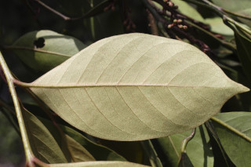
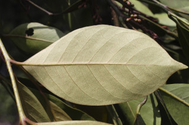
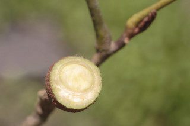
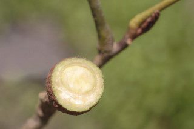

| Leaves : | Leaves compound , pinnate , up to 42 cm long and 26 cm wide, alternate , spiral ; petiole 15 cm long, planoconvex in cross section, covered with scales , glabrescent ; petiolules 0.2-1.2 cm long on lateral leaflets , up to 1.6 cm on terminal leaflet ; leaflets (3-) 5-9, laterals usually subopposite , rarely alternate , lamina 4-20.5 x 1-7 cm, broadly elliptic , apex acuminate with blunt tip, base cuneate , coriaceous , margin recurved , young leaves completely covered with peltate_scales , midrib and nerves with peltate_scales on both sides, scarcely peltate_scaly beneath when mature; secondary_nerves 7-10 pairs, not prominent; tertiary_nerves broadly reticulate . |

 



 
